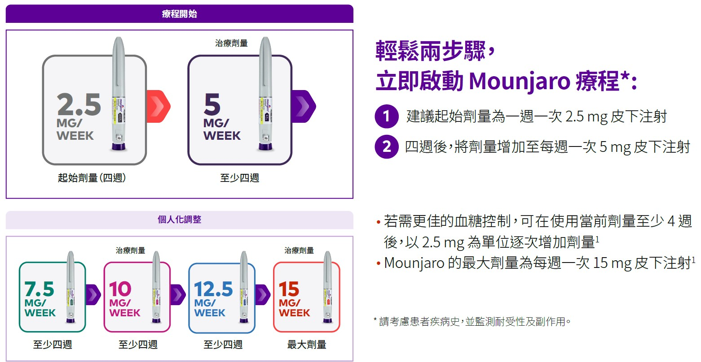
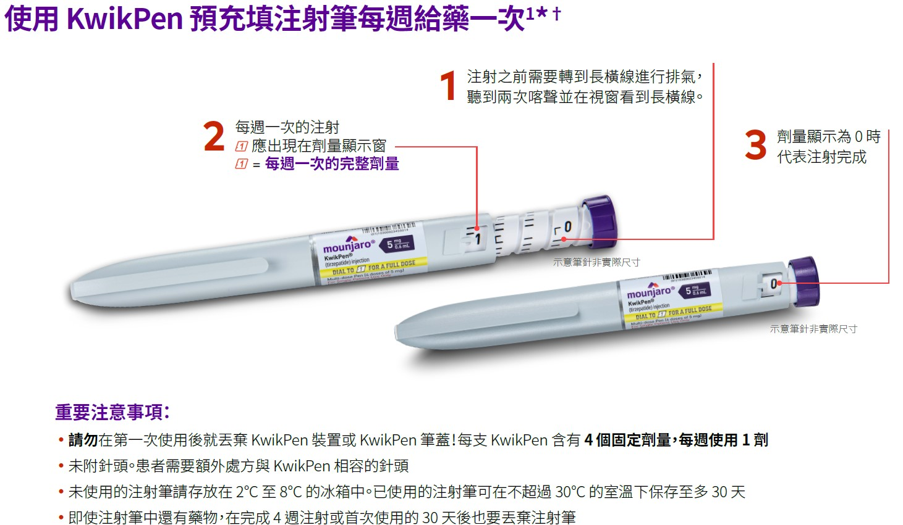

肥胖：一場全球性的健康挑戰
肥胖不僅是體重問題，更是一種複雜的慢性疾病，與第二型糖尿病、心血管疾病等多種共病症密切相關。猛健樂的出現，為應對這一全球流行病提供了強而有力的藥物治療新選擇。
目標族群 (FDA 核准)
BMI ≥ 30
或
BMI ≥ 27
+ 至少一種體重相關共病症
驚人的減重潛力
在為期72週的臨床試驗中，使用最高劑量 (15mg) 的患者
22.5%
平均體重降幅
BMI 計算器
輸入您的身高和體重，檢查是否符合猛健樂的目標族群標準。
正面交鋒：療效優越性分析
在關鍵的 SURMOUNT-5 頭對頭臨床試驗中，猛健樂在各項減重指標上均顯著優於其主要競爭對手司美格魯肽 (Semaglutide)。這突顯了其雙重作用機制的卓越療效。
數據來源：SURMOUNT-5 臨床試驗，72週數據。
體重達標里程碑
更高比例的使用者能達到具有臨床意義的體重減輕閾值。近半數使用者在72週內減重超過20%，這是生活方式干預難以企及的成就。
數據來源：SURMOUNT-5 臨床試驗 (猛健樂組)。
患者的治療旅程：劑量調整流程
為最大化耐受性並降低副作用，猛健樂採用循序漸進的劑量調整策略。此流程旨在讓身體逐步適應藥物，是確保患者長期依從性的關鍵。請參考以下流程圖。

針劑外觀與注射筆使用指南
猛健樂採用預充式注射筆設計，方便患者自行施打。了解針劑和注射筆的注意事項及正確施打方法，對於安全有效用藥至關重要。

注射筆注意事項
- 針劑應透明澄清，無顆粒或變色，若有異常請勿使用。
- 儲存於冰箱 (2°C-8°C)，避光保存。室溫 (最高30°C) 可儲存最長21天。
- 一旦離開冷藏後不可再放回冰箱。
- 切勿搖晃注射筆，避免藥液變質。
- 注射筆為單次使用設計，切勿重複使用或與他人共用，以防感染。
簡易施打方法
- 準備：從冰箱取出注射筆，讓其達到室溫。檢查藥液外觀是否正常。
- 選擇部位：選擇腹部、大腿或上臂進行皮下注射，每週更換不同部位施打。
- 清潔：用酒精棉片清潔選定的注射部位，待其自然乾燥。
- 注射：按照注射筆說明，將筆頭貼緊皮膚並按下注射按鈕，等待藥液完全注入（通常有聲音提示或指示窗變化）。
- 移除：完全移除注射筆後，安全丟棄使用過的注射筆及針頭。
全方位評估
綜合評估猛健樂對於您來說的好壞處。
優點
- 獨特的 GIP/GLP-1 雙重作用機制
- 臨床證實優於競品的減重療效
- 顯著改善心血管代謝指標
- 每週一次給藥，提高便利性
缺點
- 常見的胃腸道副作用 (噁心、腹瀉)
- 需皮下注射，非口服藥物
- 藥物取得成本較高
- 需要嚴格的劑量調整以確保耐受性
- 甲狀腺C細胞腫瘤的黑框警告
- 潛在的長期未知副作用
安全性與副作用
絕大多數為輕至中度的胃腸道反應，且通常隨時間緩解。嚴重不良事件較為罕見。
常見副作用 (多為輕中度)
🤢
噁心
🚽
腹瀉
🤮
嘔吐
💩
便秘
😖
腹痛
📉
食慾下降
😴
疲勞
罕見但嚴重副作用 (需警惕)
🧏🏼
甲狀腺癌風險
🔥
胰臟炎
😖
膽囊問題
💧
腎損傷
🩸
低血糖
🚨
嚴重過敏
此處列出的副作用為常見報告或需特別警惕者，非精確發生率比例。
關鍵禁忌症與注意事項
安全是治療的首要考量。猛健樂並非適用於所有人。處方前必須進行全面的病史評估，以排除禁忌症並識別高風險族群。
絕對禁忌症
- 有甲狀腺髓樣癌 (MTC) 個人或家族史。
- 患有第2型多發性內分泌腫瘤症候群 (MEN 2) 的患者。
- 對猛健樂或其任何成分有嚴重過敏反應史。
重要注意事項
- 有胰臟炎病史者需謹慎使用。
- 可能延遲胃排空，影響口服藥物吸收 (如避孕藥)。
- 與胰島素或促胰島素分泌藥物併用，會增加低血糖風險。
- 懷孕、計畫懷孕或哺乳期間不建議使用。
- 嚴重腎功能不全或胃腸道疾病患者需謹慎。